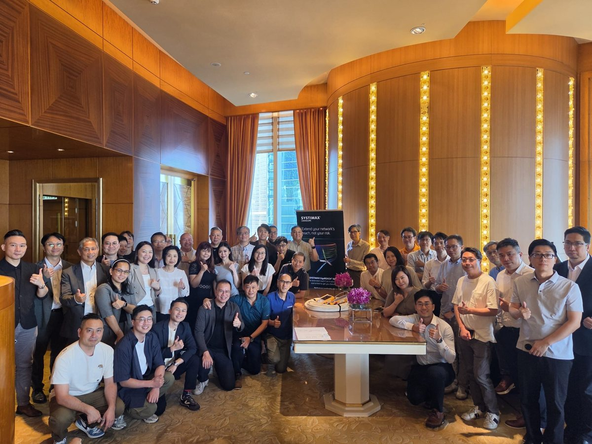
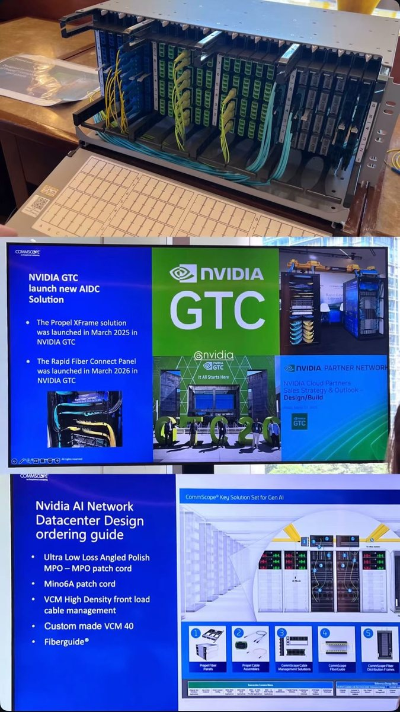
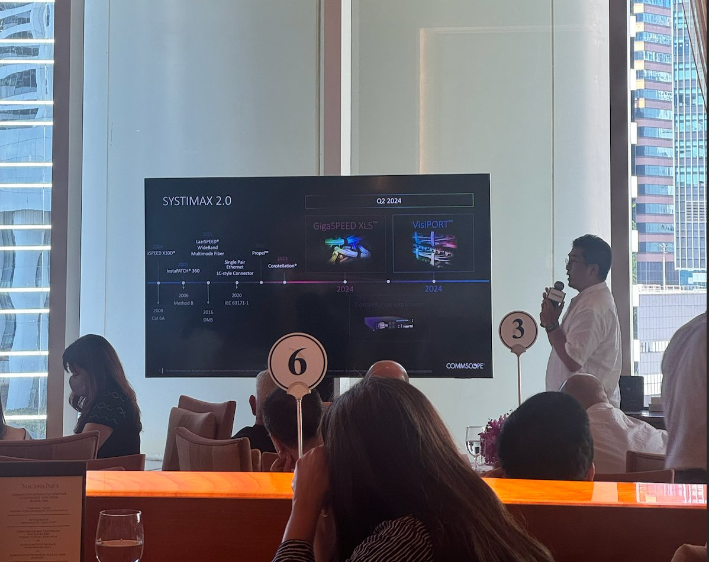
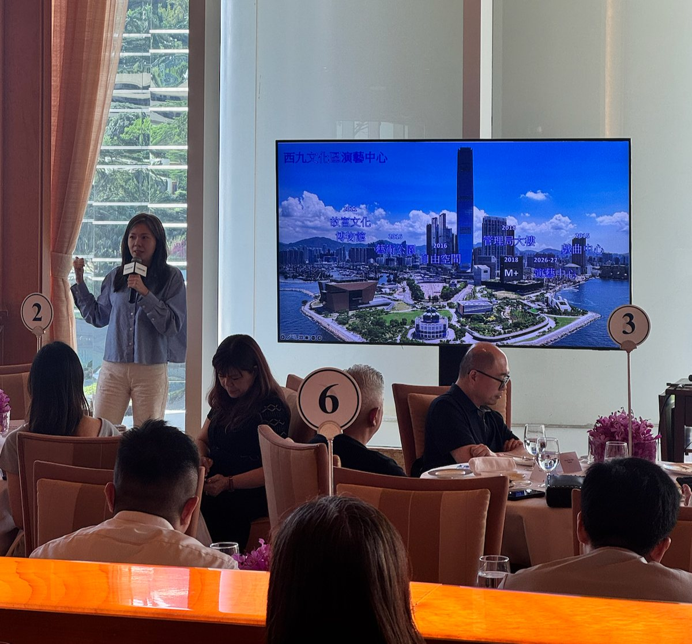

CommScope AI Data Center Solutions in Hong Kong — Highlights from the 2026 Connected Partner Conference
2026-07-17 · Excel Unit Technology

Inside the CommScope Connected Partner Conference Hong Kong 2026 — Propel XFrame & Rapid Fiber Connect for NVIDIA AI data centres, the SYSTIMAX 2.0 launch, and West Kowloon deployment.
Hong Kong's connectivity ecosystem gathered at Conrad Hong Kong for the CommScope Connected Partner Conference 2026 — and the message was clear: the AI era is rewriting what data centres demand from their fibre foundation. As CommScope's authorised distributor for Hong Kong, Macau and Taiwan, Excel Unit Technology was on the floor for every announcement. Here's what matters for anyone planning a build.
1. Built for NVIDIA AI data centres

The headline story was AI infrastructure. CommScope now offers a complete, NVIDIA-aligned fibre architecture:
- Propel® XFrame — the modular ultra-low-loss platform, launched at NVIDIA GTC (March 2025)
- Rapid Fiber Connect™ Panel — the newest addition, launched at NVIDIA GTC (March 2026), purpose-built for ultra-dense GPU fabrics with pre-terminated, off-site-integrated assemblies
| Component | Role in the AI fabric |
| Ultra-low-loss angled-polish MPO–MPO patch cords | Maximum optical budget for dense GPU links |
| Mino6A patch cords | High-density copper for management/ancillary |
| VCM high-density front-load cable management | Access and airflow in packed racks |
| Custom VCM 40 | Tailored high-count cable routing |
| FiberGuide® | Protected optical raceway across the hall |
The problem it solves: AI clusters need thousands of fibre links terminated fast and flawlessly. This stack moves the slow, error-prone work off the live floor — turning weeks of deployment into days, and protecting the optical budget that keeps GPUs talking at 400G/800G and beyond.
2. SYSTIMAX® 2.0 — a trusted platform, reinvented

SYSTIMAX has anchored enterprise networks since Cat 6A (2008), through InstaPATCH® 360, LazrSPEED® WideBand and Propel. At the conference, CommScope unveiled SYSTIMAX 2.0 — the next generation, headlined by GigaSPEED XL5™ copper and VisiPORT™. For enterprises, it means a clean, standards-based path to higher speed and easier management without abandoning a platform they already trust.
3. Proven at landmark scale — West Kowloon Cultural District

Product is only half the story; delivery is the other. Working alongside our partner Macroview, Excel Unit helped coordinate the structured-cabling foundation across the West Kowloon Cultural District — one of Hong Kong's most ambitious developments. The deployment spanned:
- Shielded Cat 6A copper for high-performance horizontal
- OM4 multimode and OS2 singlemode fibre for backbone and high-bandwidth links
- OSP (outside-plant) fibre for inter-building runs
- imVision® AIM software for real-time, audit-ready physical-layer management
Bring this ecosystem to your next project
Whether you're designing an AI-ready data centre or a large campus, Excel Unit Technology delivers the full CommScope portfolio — Propel, Rapid Fiber Connect, SYSTIMAX 2.0 and imVision — backed by certified BOM design, 1,000,000+ products ex-stock, same-day despatch and up to 25-year warranty.
Planning a project? 索取報價
Distributor pricing and Hong Kong stock within 2 business hours.